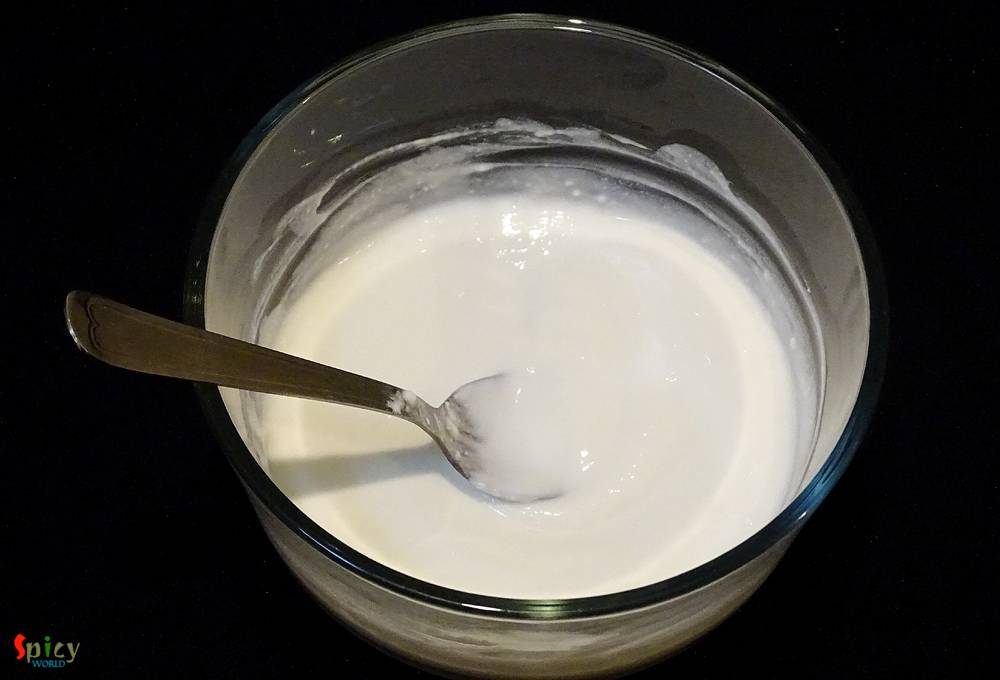
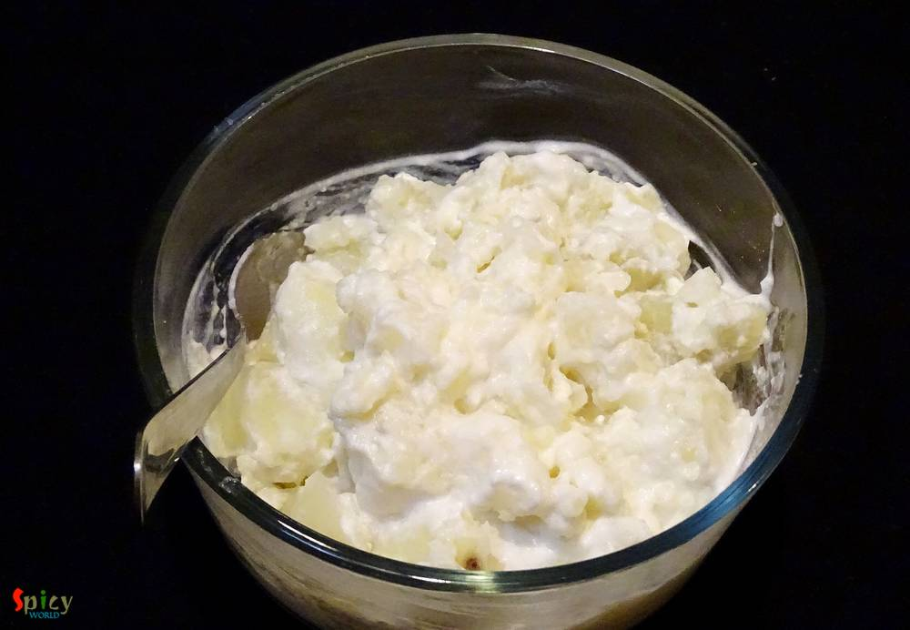
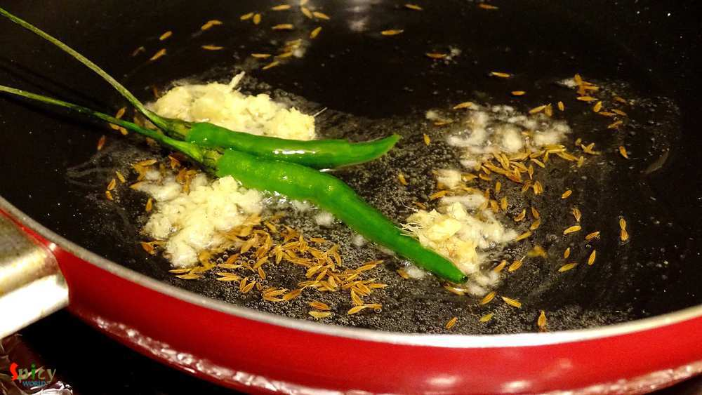
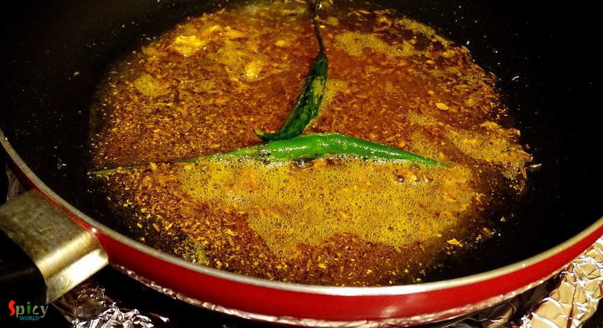
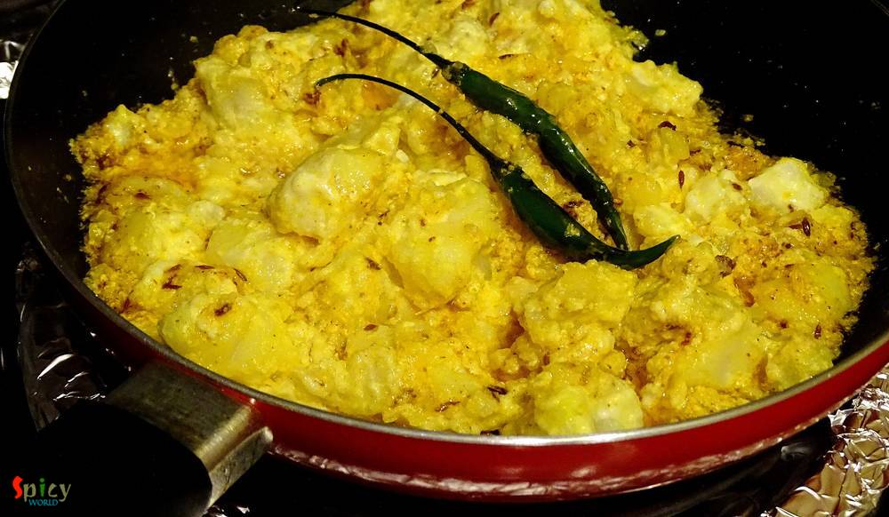
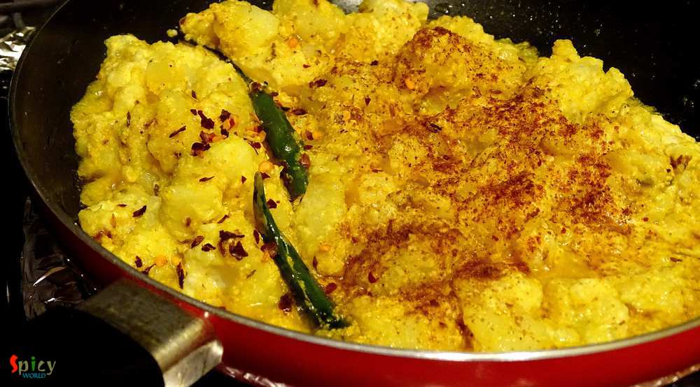
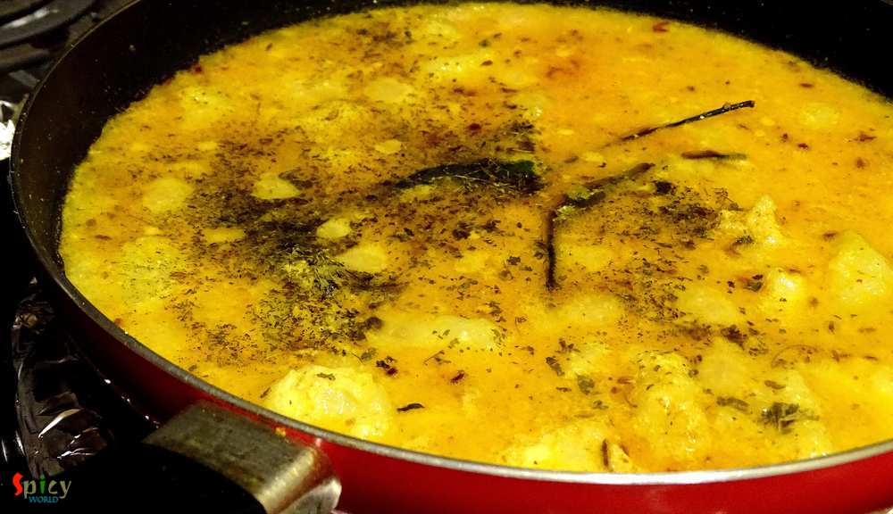
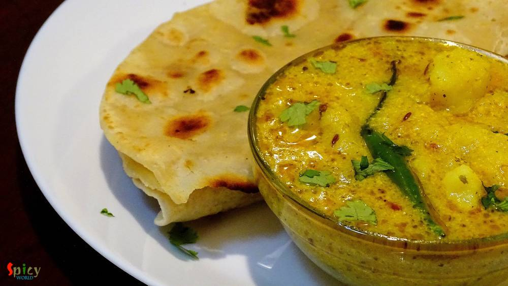

Simple and Easy Recipes
Dahi Aloo / Dahiwale Aloo / Potato cooked in yogurt sauce
© 2016 Spicy World, Published on: Feb 5, 2016
Sometimes, specially in weekdays, I just want to spend very little time in kitchen but also cook some tasty foods. 'Dahi Aloo' is one of the quickest and tastiest maincourse I found out. You have to cook the crumbled and boiled potatoes in a spicy, tangy yogurt sauce. It is that simple, can you imagine ? This is also a no onion and no garlic recipe, best for puja days or 'vrat' days. You can pair this dish with 'poori', 'paratha' or 'roti'. Try this simple recipe in your kitchen and let me know the results ...

Ingredients
- 2 boiled potatoes.
- 1 cup of yogurt.
- Salt and sugar.
- Pinch of hing (asafoetida).
- 1 Teaspoon of cumin seeds.
- 2 green chilies.
- Half Teaspoon of grated ginger.
- Spice powder (1 Teaspoon turmeric powder, 1 Teaspoon red chilli powder, 1 Teaspoon coriander powder and half Teaspoon cumin powder).
- Warm water.
- 3 - 4 Tablespoons of white oil.
- Some garam masala.
- Some crushed kasuri methi (dry fenugreek leaves).
- Some chopped coriander leaves.

Steps
Beat the yogurt with a Teaspoon of salt and 2 Teaspoons of sugar very well.
Crumble the boiled potatoes with your hand and add in the yogurt. Mix well.
Heat oil in a pan.
Add hing, cumin seeds, green chilies and grated ginger into the hot oil. Saute for 30 seconds.
Then add all the above mentioned spice powder. Mix for a minute.
Now add the potato and yogurt mixture in the oil. Mix well for 5 minutes.
Then add some warm water, garam masala and salt. Mix well for 5 minutes.
Add some kasuri methi and cook for another 2-3 minutes.
Lastly add some coriander leaves and turn off the heat.
Your dahi aloo is ready ...
Enjoy this hot with parathas / poori ...
")